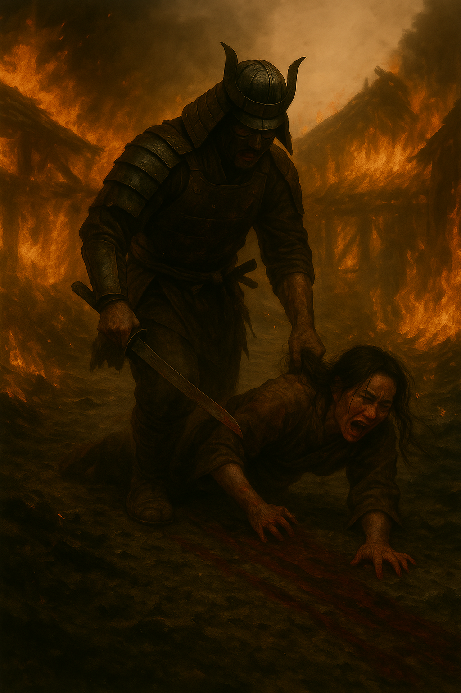

Table of Contents
Haiku of Ash and Bone is a psychologically brutal historical epic set in Sengoku-era Japan, blending the grounded realism of Shogun with folkloric horror. It is a multi-POV story exploring trauma, politics, and the shaping of individuals into weapons.
READER DISCRETION ADVISED
Haiku of Ash and Bone is a work of fiction intended for a mature audience. The story contains graphic and explicit content, including but not limited to: scenes of intense violence, death, torture, and sexual assault.

Prologue
Before the Sun Cleared
Chapter 1
When Crows Mourn the Dead
Chapter 2
A Village Burns
Chapter 3
Mintao's Concern
Chapter 4
Let the Mountain Have Him
Chapter 5
Beneath the Torii
Chapter 6
Whispers in a Teahouse
Chapter 7
Tuesday
Wolves at the Dock
Chapter 8
Brine and Blood
Chapter 9
The Scent of Bitter Herbs
Chapter 10
Red Marks and Ledgers
Chapter 11
A Debt of Blades
Chapter 12
Payment in Mud
Chapter 13
What the Fire Left
Chapter 14
A River of Ghost
Chapter 15
A Bridge of Men
Chapter 16
The Rice Spider's Game
Chapter 17
Wrong Place Wrong TimeD
Chapter 18
Hour of the Serpent
Chapter 19
A Third Player on the Board
Chapter 20
The Mending
Chapter 21
Box of Clothes
Chapter 22
A Sacrificial Stone
Chapter 23
Headless Jizo
Chapter 24
Where Names Go to Die
Chapter 25
Empty Confession
Chapter 26
Fingerless Loyalty
Chapter 27
The Clumsy Farmer
Chapter 28
CThe Shadows have Teeth
Chapter 29
CWhisper Through Bones
Chapter 30
Even Towns Have Souls
Chapter 31
The Stillness and the Storm
Chapter 32
The Tacticians Carrot
Chapter 33
Witness of Nightmares
Chapter 34
Payment in Souls
Chapter 35
Broken Wing Crane
Chapter 36
Chamber Empress
Chapter 37